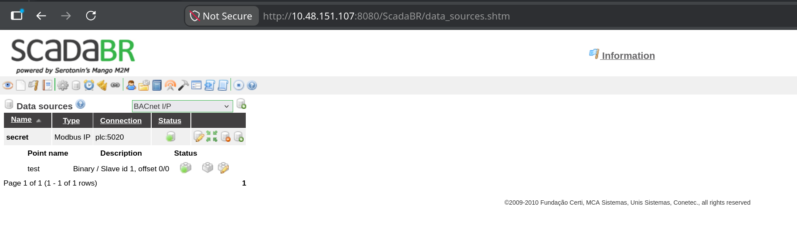

Network Reconnaissance
Fast scan first, just to see what's answering before committing to a full sweep.
shell
sudo nmap -sS -sV -sC 10.48.151.107 -F -T4A page title that says ScadaBR CTF isn't being coy about the theme. ScadaBR is an open-source SCADA/HMI suite — the dashboard a plant operator stares at all day to watch tank levels and valve states. Whenever one of these turns up, the interesting target usually isn't the dashboard. It's whatever industrial protocol the dashboard is talking to behind the scenes.
WebSockify on port 80 is a hint in the same direction: it's a WebSocket-to-TCP bridge, most commonly used to put a VNC session in a browser. Something graphical is running on this host that they want reachable — worth noting, though it turns out not to be needed.
ScadaBR — Default Credentials, and a Datasource Named "secret"
ScadaBR ships with a well-documented default login, and this deployment never changed it. admin:admin lands straight on the operator console.

Somebody's sense of humour named the datasource "secret" and then parked it behind admin:admin. The name is a joke; the connection string is the actual finding. Two fields matter here:
plc, listening on port 5020. ScadaBR is a middleman we don't actually need.The point type shown is Binary at offset 0, which in ScadaBR terms means a coil or discrete input — a single bit. That's the decoy. Nothing says the PLC only holds what the HMI was configured to display, and the register table sitting next to it is a much larger surface.
The Port nmap Couldn't Name
Full sweep now, all 65535 ports, no -F shortcuts.
shell
sudo nmap -p- 10.48.151.107output — nmap -p-
PORT STATE SERVICE VERSION
22/tcp open ssh OpenSSH 9.6p1 Ubuntu
80/tcp open http WebSockify Python/3.12.3
5020/tcp open zenginkyo-1? # ← nmap's best guess, and it's wrong
5901/tcp open vnc VNC (protocol 3.8)
| vnc-info:
| Security types: VeNCrypt (19), VNC Authentication (2)There it is — 5020, exactly the port ScadaBR's datasource pointed at. nmap labels it zenginkyo-1?, which is just a lookup in nmap-services saying "historically some Japanese banking protocol registered this number." The trailing question mark means no service probe matched. That's expected and worth internalising:
We don't need nmap to name it anyway — the ScadaBR config already told us: Modbus. VNC on 5901 is sitting there too (that's what WebSockify on 80 is bridging), but the PLC gives up everything on its own, so the desktop never comes into play.
How Modbus Actually Works
Modbus is old. Older than most of the engineers still deploying it. Modicon designed it in 1979 so its programmable logic controllers could exchange readings over a serial line, and the industry never replaced it — it just kept bolting new transports underneath the same message format. "Modbus TCP" is that identical 1979 conversation wrapped in a TCP socket instead of RS-485 wiring, which is precisely what's listening on 5020.
The design brief back then was "let two industrial devices on an isolated factory floor talk to each other." Authentication was not part of that brief, and it still isn't. There is no login, no token, no session — nothing beyond the TCP handshake itself. Whoever can route a packet to the controller can read its memory, and with the write function codes, change it.
One controller, four tables of memory
A Modbus device exposes its entire state as four flat memory tables. That's the complete data model — no schema, no field names, no types beyond "bit" and "16-bit word":
| Table | Width | Access | Typically holds |
|---|---|---|---|
| Coils | 1 bit | read / write | relay and valve states — on/off outputs |
| Discrete Inputs | 1 bit | read-only | limit switches, sensor trip flags |
| Input Registers | 16 bit | read-only | measured values — temperature, pressure |
| Holding Registers | 16 bit | read / write | setpoints, configuration, general scratch memory |
Holding registers are the interesting one: read and write, 16 bits wide, and completely generic. In a real plant a holding register might be a target temperature or a pump speed. The protocol attaches no meaning to the contents — it's sixteen bits, and interpretation is entirely a convention between whoever wrote the PLC program and whoever reads it. Which means nothing stops a challenge author from parking one ASCII character per register and letting the controller hand it out to anyone who asks.
Function codes: the verbs
Every request opens with a single byte naming the operation. The whole vocabulary is small enough to memorise:
| Code | Operation | Target table |
|---|---|---|
| 0x01 | Read Coils | coils |
| 0x02 | Read Discrete Inputs | discrete inputs |
| 0x03 | Read Holding Registers | holding registers |
| 0x04 | Read Input Registers | input registers |
| 0x05 / 0x06 | Write Single Coil / Register | coils / holding registers |
| 0x0F / 0x10 | Write Multiple Coils / Registers | coils / holding registers |
0x03 is what we want — read holding registers, the read/write 16-bit table. Note how casually the write codes sit in that same list. On a live plant, 0x06 against the right address is the difference between a pump running and a pump not running.
The envelope: MBAP header
Serial Modbus used a CRC checksum so a receiver could tell where one message ended and the next began. TCP already guarantees ordered, error-checked delivery, so when Modbus was adapted for IP networks the CRC was dropped and replaced with the MBAP header — Modbus Application Protocol header. Its entire job is bookkeeping: which request is this, which protocol, how long is the message, which device should answer. Everything after the header is the PDU — the Protocol Data Unit, the actual command, structurally unchanged since the RS-485 days.
0. It exists because someone in the nineties imagined other protocols riding this same header. They never arrived. The field is a permanent zero.1.Fill that layout in with real values — read 60 holding registers starting at address 0, unit 1 — and here are the exact twelve bytes that leave the socket:
wire format — hex
00 01 00 00 00 06 01 03 00 00 00 3c
└TxID─┘ └Proto┘ └─Len─┘ UID FC └Start┘ └─Qty─┘
└──────── MBAP header, 7 bytes ────┘ └─── PDU, 5 bytes ───┘
# 00 06 → six bytes follow the Length field (1 unit id + 5 pdu)
# 00 3c → 60 in hex: sixty registers, sixty possible charactersSkipping the Middleman — Talking to the PLC Directly
ScadaBR would happily poll this datasource and render it as a widget, but there's no reason to fight a Java web app's UI when the protocol underneath has zero access control. A TCP socket and struct is the entire toolchain. No pymodbus, no library — packing the bytes by hand is the part actually worth understanding.
python — mod.py
import socket, struct
TARGET_IP = "10.48.151.107"
TARGET_PORT = 5020 # non-standard — Modbus normally lives on 502
# PDU: 0x03 = Read Holding Registers, start at address 0, read 60 registers
pdu = struct.pack(">BHH", 0x03, 0, 60)
# MBAP: Transaction ID=1, Protocol ID=0, Length=len(pdu)+1, Unit ID=1
mbap = struct.pack(">HHHB", 1, 0, len(pdu) + 1, 1)
s = socket.socket()
s.connect((TARGET_IP, TARGET_PORT))
s.sendall(mbap + pdu)
resp = s.recv(4096)
# Response = [MBAP: 7 bytes][function code: 1][byte count: 1][register data...]
byte_count = resp[8]
regs = struct.unpack(">" + "H" * (byte_count // 2), resp[9:9 + byte_count])
# Each register holds one ASCII character code — keep only printable ones
print("".join(chr(r) for r in regs if 32 <= r < 127))
s.close()Nothing exotic — it's the same twelve bytes from the diagram, typed into struct.pack instead of drawn as boxes. A few details are worth slowing down on, because they're where hand-rolled protocol code usually breaks.
Why every format string starts with >
The leading > forces big-endian byte order — most significant byte first. Modbus mandates this regardless of what CPU sits on either end, the same way TCP/IP does (it's literally called "network byte order"). Drop the > and struct falls back to the host's native order, which on any x86 machine is little-endian. The value 60 would go out as 3c 00 instead of 00 3c — that's 15360 to the PLC, and it would either error out or try to hand back thirty kilobytes of registers.
Packing the PDU — ">BHH"
Three values, back to back: B is one unsigned byte for the function code, and each H is an unsigned short — two bytes — for the starting address and the register count. One byte plus two plus two is five, exactly the PDU width in the diagram. The address is 0 because ScadaBR's own point was configured at offset 0, and 60 is simply a generous read window — plenty of room for a short string, cheap enough that there's no reason to be precise.
Packing the header — ">HHHB"
Three shorts and a byte: transaction ID, protocol ID, length, unit ID. The field that trips people up is len(pdu) + 1. Length is not the size of the message — it's the number of bytes that follow the Length field itself, which is the Unit ID (1 byte) plus the PDU (5 bytes). That's 6, matching the 00 06 in the hex dump. Writing len(pdu) or len(mbap + pdu) here are both extremely easy mistakes, and the PLC's response to either is usually silence rather than a helpful error.
Taking the response apart
The reply mirrors the request's shape. Seven bytes of MBAP first (same four fields, transaction ID echoed back). Then at offset 7, the function code — an echo confirming which command this answers, and the field where an error would show up: on failure the PLC sets the high bit, so 0x03 comes back as 0x83 followed by an exception code. At offset 8, a byte count — how many data bytes follow. From offset 9 onward, the register values themselves.
That's why the slice is resp[9:9 + byte_count], and why the format string is built dynamically: byte_count // 2 converts "bytes of payload" into "number of 16-bit registers", since each register is two bytes wide. Sixty registers means byte_count comes back as 120, giving ">" + "H" * 60 — a format string with sixty Hs in it, generated rather than typed.
Turning registers into text
chr(r) treats each 16-bit register as a character code. Sixty registers were requested but the stored string is short, so most come back as 0 — untouched PLC memory. The if 32 <= r < 127 filter is doing real work: 32 is the space character, 126 is ~, and that range is exactly printable ASCII. Without it you'd be printing a wall of null bytes and control characters with the actual content buried somewhere inside.
0x03, then 0x04 for input registers, and let the printable-ASCII filter tell you which offsets hold text instead of sensor values. Registers full of zeros or wildly varying numbers are real process data; a contiguous run inside 32–126 is somebody's string.Result
shell
python3 mod.py
THM{[redacted]}No exploit, no fuzzing, no privilege escalation. Twelve bytes sent to an unauthenticated protocol port, and the controller reads its own memory out loud. The ScadaBR login and the datasource cheekily named "secret" were the only things standing between an anonymous TCP connection and the PLC's register table, and neither of them was ever actually in the way.
Chain Summary & Takeaways
zenginkyo-1? is a port-number lookup, not a fingerprint. OT protocols come back unlabeled constantly. An unknown port next to a SCADA product is a lead, not noise.struct.pack teaches you the header layout, byte order, and length semantics in a way pymodbus.read_holding_registers() never will — and when something misbehaves, you can read the wire.